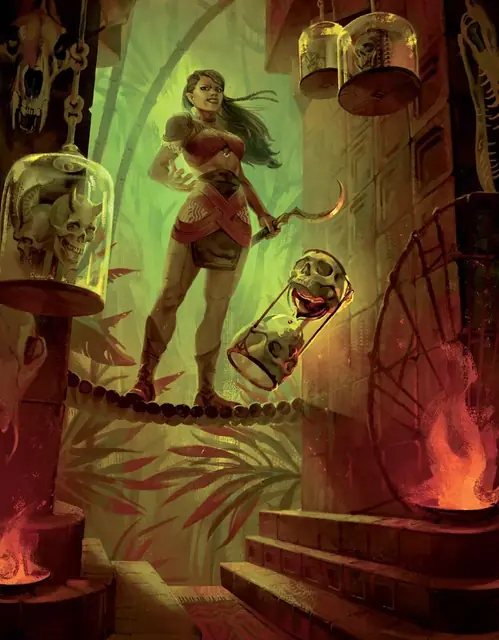

Чакуна
Chakuna
Среднее Чудовище (Ликантроп), Нейтральное, именной НИП

Класс Защиты 16 Инициатива +12 (22)
Хиты 210 (28к8 + 84)
Скорость 30 футов (50 футов в форме пантеры), Лазания 40 футов (только в форме пантеры)
| мод | спас | ||
|---|---|---|---|
| СИЛ | 17 | +3 | +3 |
| ЛОВ | 18 | +4 | +4 |
| ТЕЛ | 16 | +3 | +3 |
| мод | спас | ||
|---|---|---|---|
| ИНТ | 10 | +0 | +13 |
| МДР | 15 | +2 | +11 |
| ХАР | 11 | +0 | +12 |
Чувства Тёмное зрение 150 футов, пассивное Восприятие 20
Языки Общий (не говорит в форме пантеры)
Опасность 11 (7 200 опыта или 8 400 опыта в Домене; БВ +4)
Особенности
Восстановление Тёмной владычицы. Если сердце Чакуны цело, спустя 1к10 недель после смерти она возрождается с полными Хитами в где-то в Валахане. Сердце Чакуны — это объект Крошечного размера с КЗ 15, 10 Хитами и Иммунитетом ко всему урону, кроме урона Огнём.
Легендарное сопротивление (3/день, или 4/день в Домене). Если Чакуна проваливает спасбросок, она вместо этого может в нём преуспеть.
Опытная охотница. Труднопроходимая местность в виде подлеска и валежника не стоит Чакуне дополнительных футов перемещения.
Действия
Мультиатака. Чакуна совершает три атаки Царапанием или Зазубренным копьём в любой комбинации. Она может заменить одну из этих атак на атаку Укусом.
Царапание. Бросок рукопашной атаки: +8, досягаемость 5 фт. Попадание: 13 (2к8 + 4) Рубящего урона.
Зазубренное копьё (только в гуманоидной или гибридной форме). Бросок рукопашной или дальнобойной атаки: +8, досягаемость 5 фт. или дистанция 30/120 фт. Попадание: 8 (1к8 + 4) Колющего урона, и цель получает калечащую рану, если ещё не имеет её. Пока цель ранена, она теряет 5 (1к10) Хитов в начале каждого своего хода, а её Скорость снижена на 10 футов. Рана закрывается спустя 1 минуту, после восстановления Хитов цели заклинанием или после того, как цель или существо в пределах 5 футов от неё действием перевяжет рану, совершив проверку Мудрости (Медицина) Сл 15.
Промах или попадание: Копьё магическим образом возвращается в руку Чакуны сразу после совершения дальнобойной атаки.
Укус (только в гибридной форме или в форме пантеры). Бросок рукопашной атаки: +8, досягаемость 5 фт. Попадание: 20 (3к10 + 4) Колющего урона. Если цель — Гуманоид, она подвергается следующему эффекту. Спасбросок Телосложения: Сл 15. Провал: Цель проклята. Когда Хиты проклятой цели опускаются до 0, она становится верпантерой со статистикой Вертигра под управлением Мастера и получает 10 Хитов. Успех: Цель получает Иммунитет к проклятию Чакуны на 24 часа.
Бонусные действия
Перевоплощение. Чакуна либо перевоплощается в гибрид пантеры и гуманоида Большого размера или в пантеру Большого размера, либо возвращается в истинную форму гуманоида. Её статистика, кроме размера, не меняется в зависимости от формы. Любое снаряжение, которое она носит или несёт, не трансформируется.
Рыск (только в гибридной форме или в форме пантеры). Чакуна перемещается на расстояние вплоть до значения своей Скорости, не Провоцируя атаки. В конце этого перемещения Чакуна может совершить действие Затаивание.
Легендарные действия
У этого существа есть 3 использования Легендарных действий (или 4 использования в Домене); оно может немедленно после окончания хода другого существа потратить одно использование, чтобы совершить одно из следующих действий. Существо восполняет все потраченные использования в начале каждого своего хода.
Наскок. Чакуна перемещается на расстояние вплоть до половины своей Скорости и совершает одну атаку Царапанием.
Удар из тени. Чакуна совершает одну атаку Зазубренным копьём. Если у Чакуны есть состояние Невидимый от действия Затаивание, эта атака не оканчивает состояние. Чакуна не может совершить это действие снова до начала своего следующего хода.
Внезапный укус. Чакуна использует Перевоплощение, принимая гибридный облик или облик пантеры, а затем совершает одну атаку Укусом. Чакуна не может совершить это действие снова до начала своего следующего хода.
Бонус мастерства +4
Чакуна
Тёмная владычица, что охотится ради выживания
Чакуна — самая смертоносная охотница Валахана, юная верпантера с напором и выдержкой бывалого палача. Мало кто способен уйти от её холодной расчётливости, смертельных ловушек и стай кошачьих союзников.
Чакуна не простая убийца. Она охотится, потому что вынуждена защищать народ Осело от куда более страшной участи. Ради этого она предпочитает выбирать жертвами чужаков, заставляя их проходить Испытание Сердец. Она наслаждается охотой как на гордецов и наглецов, так и на умелых, непредсказуемых противников. Однако пощады Чакуна не знает, и даже те, к кому она проникается уважением, в конце концов напарываются на её клинок. Она щадит только жителей Осело, хотя с каждым днём страх перед ней среди её народа лишь растёт.
История Чакуны
На протяжении бесчисленных поколениий Тёмный владыка Урик фон Харьков правил Валаханом из замка Пантара и ради забавы охотился на жителей этих земель. С каждым годом его кровавые увеселения становились всё более жестокими, а излюбленной добычей служили оборотни Осело. Фон Харьков мнил себя величайшим охотником домена — и подтверждал этот титул всякий раз, когда убивал одного из сверхъестественных воинов Осело.
Чакуна была воительницей-оборотнем из Осело и, как почти все её соплеменники, искусной охотницей. Видя, что фон Харков рано или поздно истребит всю её деревню, она поклялась спасти Осело. Понимая, что убить чудовище под силу только чудовищу, она покинула свой народ и отправилась постигать глубочайшие тайны своей смертоносной родины. Вернувшись, она вызвалась стать добычей фон Харкова. В ходе последующей смертельной игры Чакуна сожгла замок Пантара и сняла голову с плеч прежнего Тёмного владыки.
Однако Валахан — непростая земля. Домен Ужаса требует Тёмного владыки — Валаханом будет править лишь величайший из охотников. Чтобы не допустить возвращения фон Харкова, Чакуна заключила договор с самим доменом. В глубинах лабиринтов Ягуаровых гор она вырвала собственное сердце из груди и пожрала сердце Урика фон Харькова. Так она похитила его силу. Но чтобы удержать её, она вынуждена беспрестанно орошать землю кровью добычи. Стоит ей прекратить, растения и звери Валахана сами становятся убийцами и воем призывают фон Харкова вернуться. Так Чакуна продолжает кровавый круговорот, совершая насилие, что некогда неволило её народ, лишь бы удержать в руках жестокое господство над своей свирепой страной.
Домен Чакуны
Валахан, домен Чакуны, изменяется из-за её присутствия, что создаёт следующие эффекты:
• Закрытие границ. Когда Чакуна находится в домене, она способна по желанию закрывать или открывать границы Валахана. Когда границы закрыты, в Туманах вокруг Валахана крадутся и парят призрачные звери. Существо, впервые за ход входящее в Туманы или начинающее в них ход, получает 1к10 Колющего урона.
• Обострённые чувства. Звери и Чудовища совершают проверки Мудрости с Преимуществом.
• Шепчущие тени. Гуманоиды вычитают 1к8 из любой проверки характеристики, совершаемой частью действия Затаивание.
Если Чакуна умирает, все эти эффекты мгновенно исчезают. Они возникают снова, если Чакуна возрождается (см. Восстановление Тёмной владычицы).